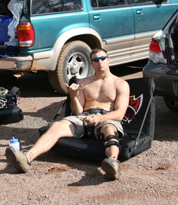
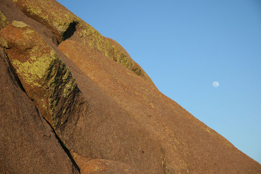
of a crash pad. Hang loose dude.
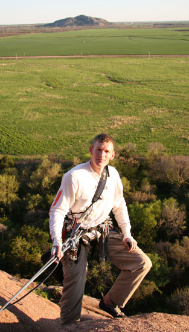
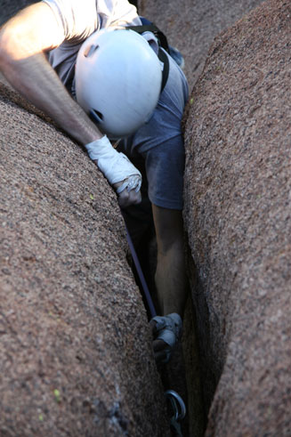
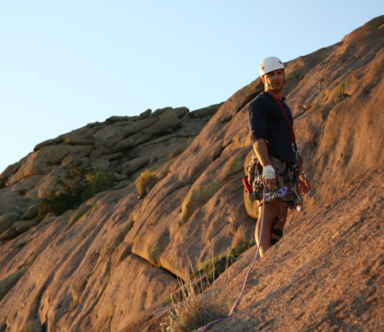
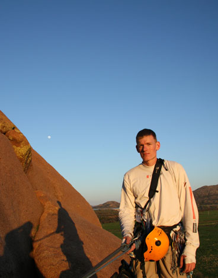
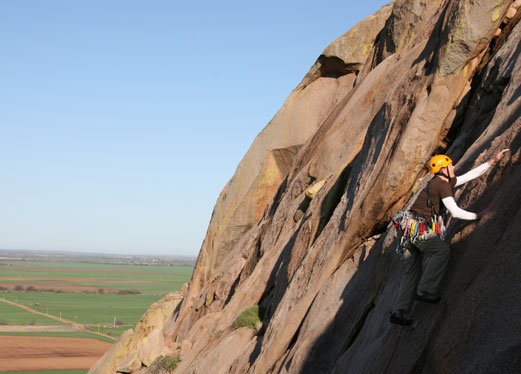
Luc always made climbing look easy (but I can tell you that it most certainly is not!)
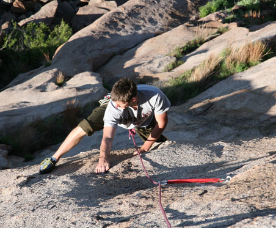
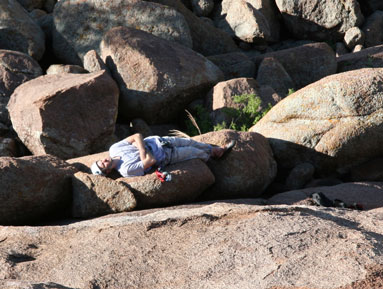
essential part of any climbing day.
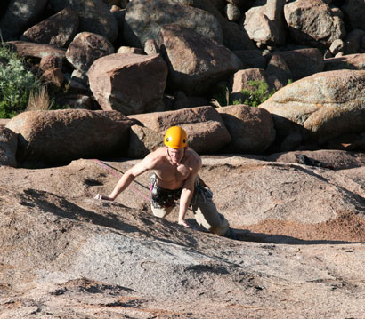
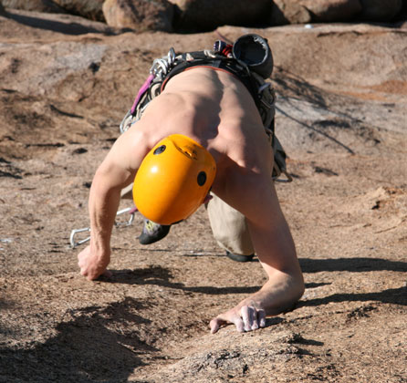
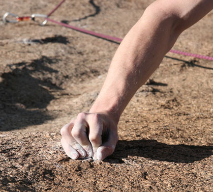
See what I mean about not much?
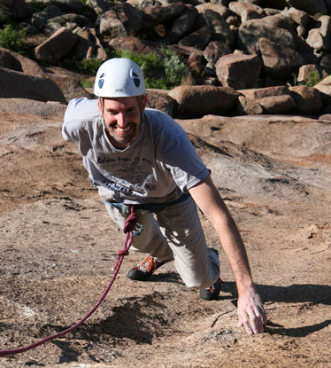
get in a photograph and is mostly seen only in climbing pictures.
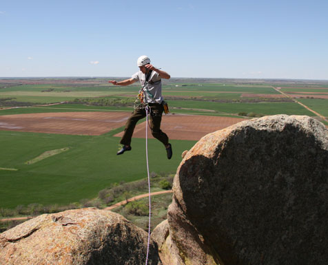
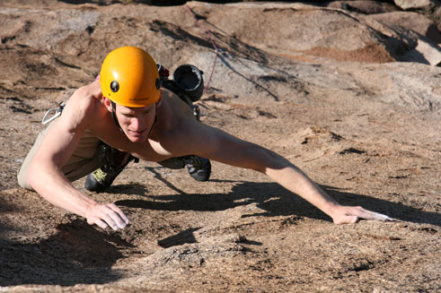
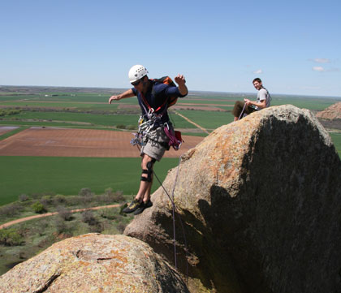
I think Steve's jump is even more impressive because of that knee brace.
Who does a jump like this while wearing a knee brace and a backpack?!
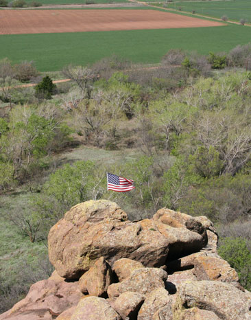
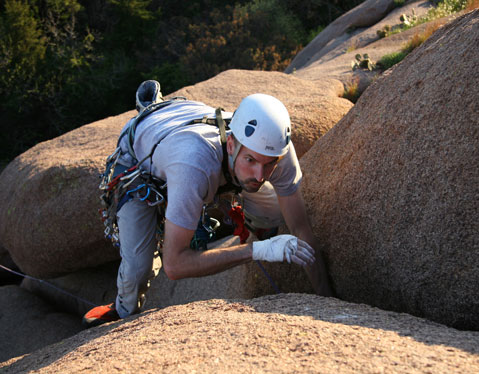
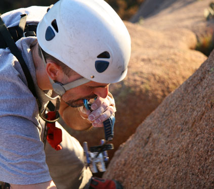
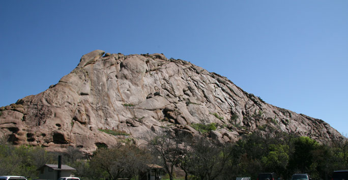
Quartz Mountain, as captured by Luc
The next set of pictures were from a trip to Lost Dome in the Wichitas in February of 2008
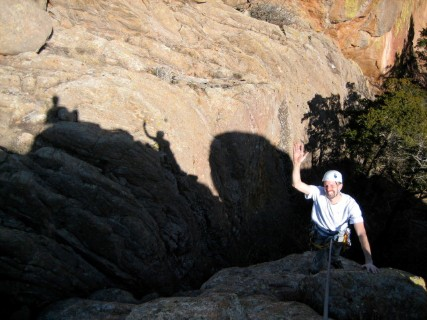
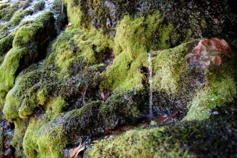
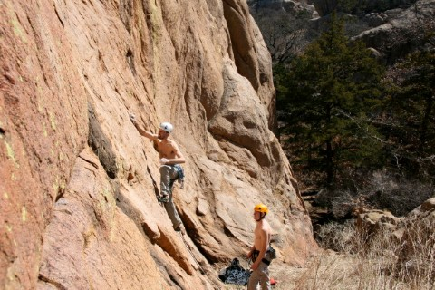
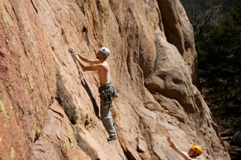
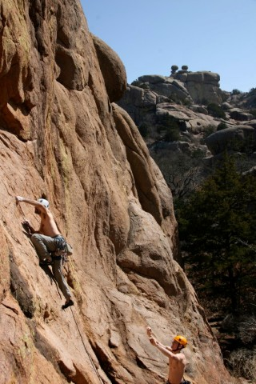
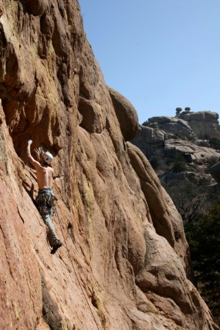
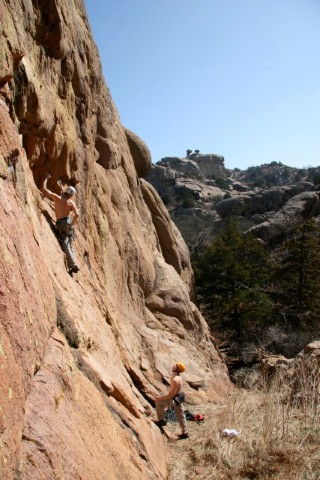
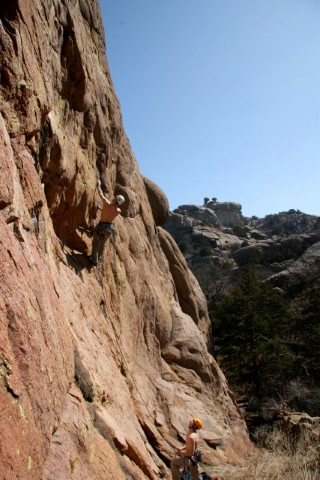
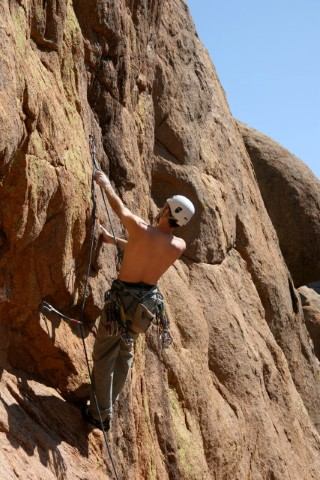
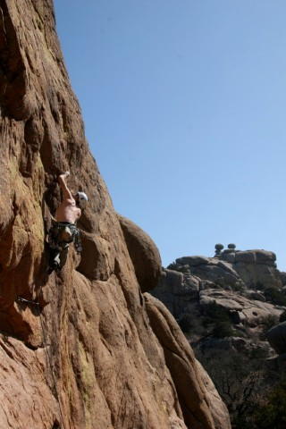
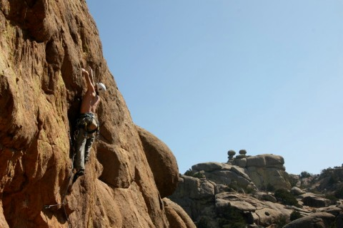
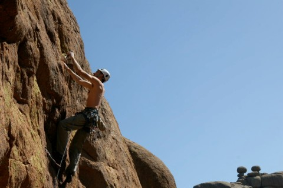
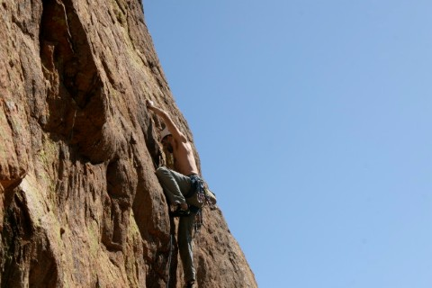
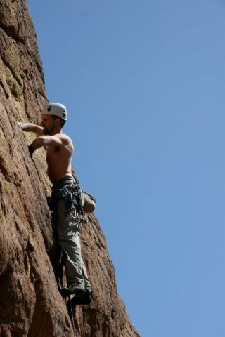
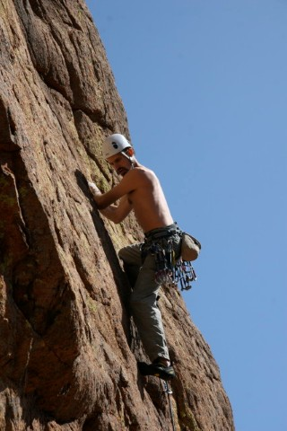
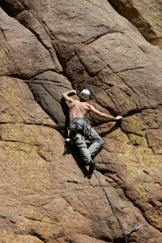
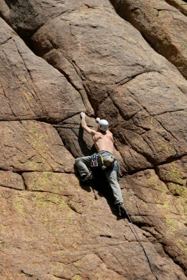
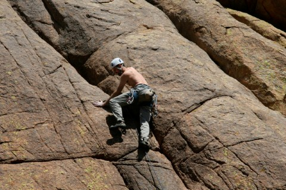
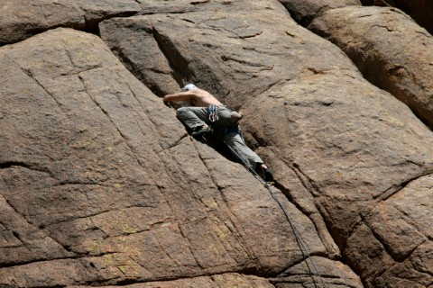
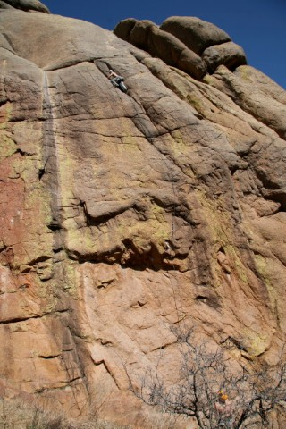
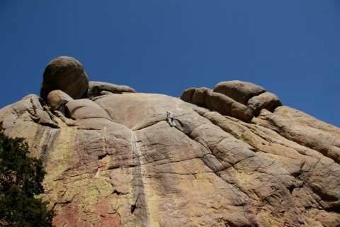
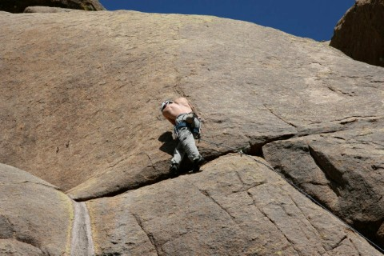
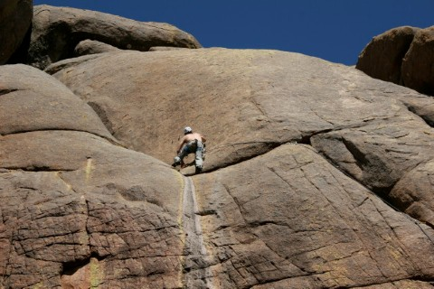
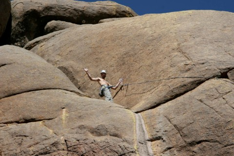
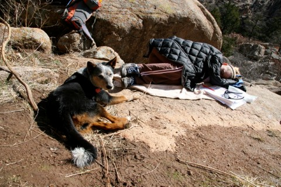
Cassy and Eric are champion nappers. Here Cassy shows off her crazy nap skills.
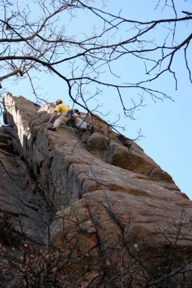
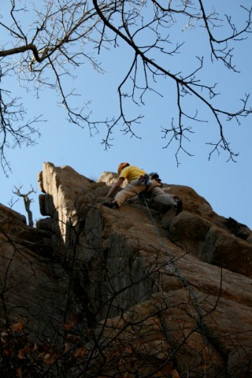
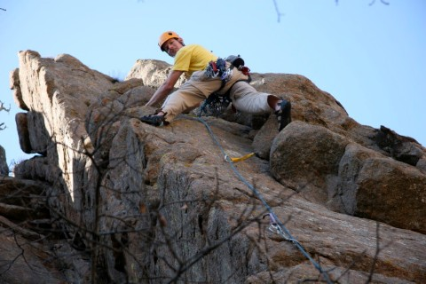
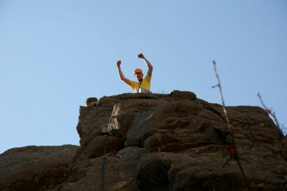
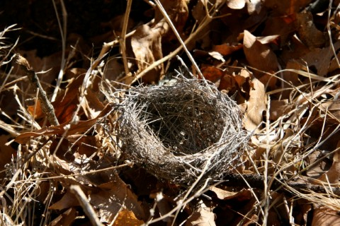
The next set was taken at Elk Slabs in March of 2008
The next set of pictures were from a trip to Quartz Mountain in March of 2008
"This is scratching my arms!" but she just climbs it.
Here are pictures of a climbing day with Luc, Steve,
and Eric in the Wichitas.
I don't know what date they were taken. It looks like it was a bit
chilly,
I'll bet Eric tried to get out of that one, but Luc wouldn't be having any of
that!
Side note - it was probably terrible pictures like the shots below that inspired Luc to take up photography as a serious hobby.